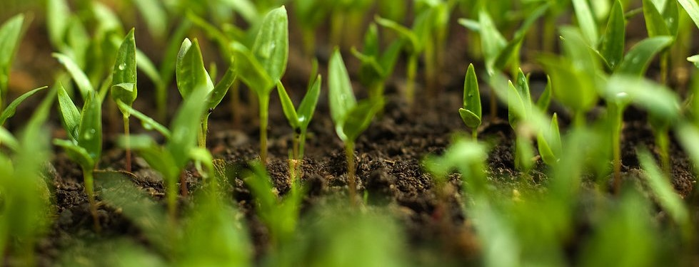
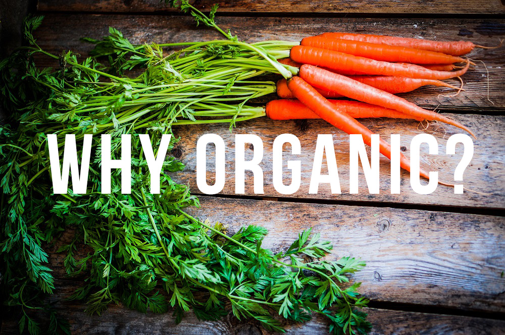
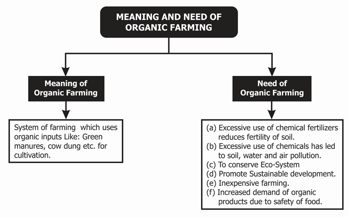
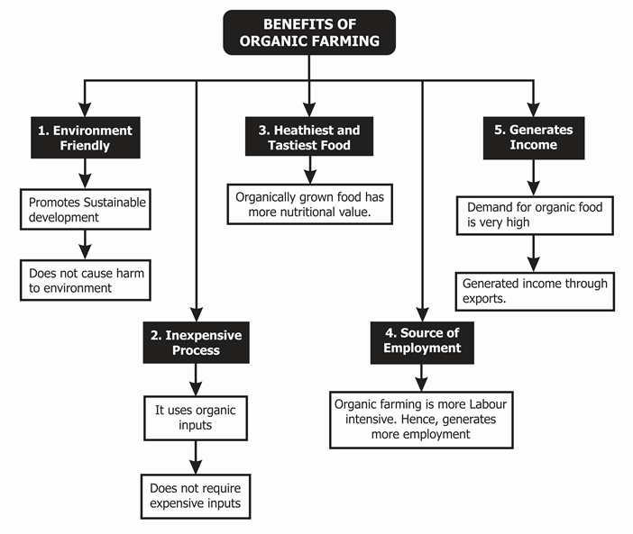
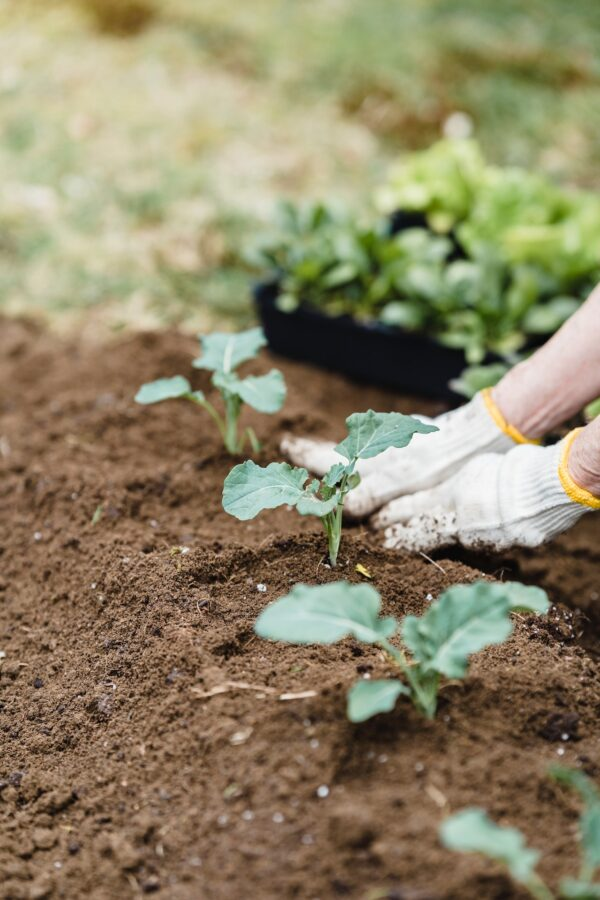

1 (2).png)
 India
India agrifriend69@gmail.com
agrifriend69@gmail.com +91 7385610493
+91 7385610493

Organic farming
Organic farming can be defined as an agricultural process that uses biological fertilisers and pest control acquired from animal or plant waste. Organic farming was actually initiated as an answer to the environmental sufferings caused by the use of chemical pesticides and synthetic fertilisers. In other words, organic farming is a new system of farming or agriculture that repairs, maintains, and improves the ecological balance.

OFRF’s Top Ten Reasons to Go Organic
There’s more than ten reasons of course, but here’s ten that we think are really important.
Organic Farming: Concept
Meaning of organic farming
System of farming that uses organic inputs like green manures, cow dung, etc., for cultivation.
Need of organic farming
- Excessive use of chemical fertilisers reduces the fertility of soil.
- Excessive use of chemicals has led to soil, water, and air pollution.
- To conserve ecosystem.
- To promote sustainable development.
- Inexpensive farming.
- Increased demand of organic products due to safety of food.


Benefits of organic farming
Basics of Organic Farming: Beginner Course
OFRF’s free beginning farmer training program for organic specialty crop farmers in California is now available. This online training program is for beginning farmers, existing organic farmers, and farmers in transition to organic production. While it was developed for California specialty crop farmers, the content is based on foundational principles that are relevant to all organic farmers and our hope is that growers across the U.S. find it to be a useful resource. The self-guided nature of the training program allows you to move through the readings and resources, visual and written content, and demonstration videos at your own pace.
The online training program contains six learning modules: 1) soil health, 2) weed management, 3) irrigation and water management, 4) insect and mite pest management, 5) disease management, and 6) business management and marketing.
Please help us get the word out on this new resource. We are looking for feedback and ask that anyone who takes the program also completes the brief surveys at the end.
This open educational resource is a joint effort between OFRF, the University of California Sustainable Agriculture Research and Education Program (UC SAREP), and California Polytechnic State University in San Luis Obispo, with funding from the California Department of Food and Agriculture. The self-paced program combines descriptive essays, video lectures from university faculty, and virtual field trips to demonstrate organic principles and practices.
